¿Qué es?
El códec de audio libre sin pérdidas (Free Lossless Audio Codec) es un formato de compresión desarrollado por
la fundación Xiph.org, sin fines de lucro, que permite la compresión de audio sin pérdida de calidad de modo
que el tamaño del archivo se reduce significativamente sin que se pierda información.
Historia
- 2000: El proyecto fue iniciado y desarrollado por el programador Josh Coalson
- 2001: Se publica la primera versión el 20 de julio
- 2003: El proyecto FLAC se incorpora a la Fundación Xiph.Org
Versiones principales
- 2006, FLAC 1.1.3: Compresión, recuperación de archivos corruptos y soporte multicanal
- 2007, FLAC 1.1.4 - 1.2.0: Mejoras en la compresión y la velocidad de codificación y decodificación
- 2013, FLAC 1.3.0: Pequeñas mejoras. Se pasa el desarrollo al repositorio git de Xiph.org
- 2022, FLAC 1.3.4: Mejoras de seguridad, arreglo de bugs y errores, pequeñas mejoras generales.
Características principales
- Sin pérdidas: No hay pérdida de información en el proceso de codificación y el audio decodificado es
idéntico al utilizado en la codificación.
- Soporta metadatos: Soporta etiquetas, portada de álbum, seek tables, cue sheets, etc.
- Rapidez: Cuenta con alta velocidad de decodificación que requiere menos poder computacional que otros
codecs.
- Código libre: FLAC es de código abierto, gratis, multiplataforma y cuenta con documentación para el
público en general.
- Ocho niveles de compresión: Cuenta con 8 niveles de compresión, siendo el 8 el nivel más lento,
resultando en menos espacio y el 0 el más rápido y mayor espacio. A pesar de esto, la decodificación
siempre es bastante rápida.
- Canales: FLAC cuenta con hasta 8 canales de audio que pueden ser agrupados en casos como estéreo, 5.1 o
Left/Right.
- Compresión: Al comprimir un archivo puede reducir su tamaño en un 50% sin perder la calidad.
- Muestras de audio: Admite una resolución PCM de 4 a 32 bits por muestra de punto fijo y una frecuencia
desde 1 Hz hasta 655.35 KHz en incrementos de 1 Hz.
Niveles de compresion
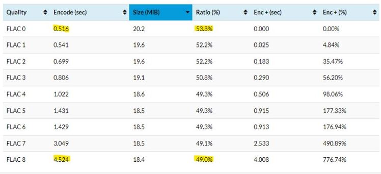
Esquema general de los compresores de audio sin pérdidas
Compresion
La estructura de codificacion es:
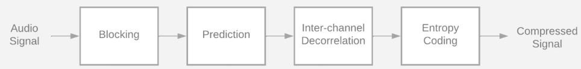
Ahora, explicaremos algunas de estas etapas mas a fondo:
- Blocking: Esta etapa divide la señal de audio de entrada en bloques contiguos o porciones de un tamaño
específico.
El tamaño óptimo del bloque generalmente se ve afectado por muchos factores. Aunque FLAC permite que el
tamaño del bloque varíe dentro de una transmisión, el codificador de referencia usa un tamaño de bloque
fijo.
El tamaño usado para dividir en bloques los datos del audio tiene un efecto directo en la relación de
compresión. Si el bloque es demasiado pequeño, el número total de bloques aumentará, desperdiciando bits
en la codificación de encabezados, de lo contrario, las características de la señal pueden variar tanto
que el codificador tendrá problemas de editabilidad y de poder ajustar correctamente la señal o calcular
los parámetros de codificación óptimos para el predictor.
Para simplificar el diseño del codificador/decodificador, FLAC impone un tamaño de bloque mínimo de 16
samples y un tamaño de bloque máximo de 65535 samples.
- Inter-channel Decorrelation (mid-side conversion): La etapa de descorrelación entre canales o
intercanal elimina la redundancia en las señales de estéreo. Al codificar los canales izquierdo y
derecho en un canal central se puede reducir el número de bits necesarios para almacenar la señal. En
casos donde los canales derecho e izquierdo son muy diferentes se puede pasar sin ninguna
descorrelación.
- Hay diferentes tipos de canales:
- Independiente: Los canales izquierdo y derecho son codificados de forma independiente.
- Central: Los canales son transformados en un canal central (punto medio) y en un canal lateral
(diferencia).
- Izquierda: El canal izquierdo y el lateral son codificados.
- Derecha: El canal izquierdo y el lateral son codificados
- Espectro de una señal y su promedio: El teorema de Gerzon y Craven indica que el nivel óptimo de la
señal decorrelada está dado por la media del espectro de la señal original, cuando se representa como
nivel espectral (dB) frente a la frecuencia lineal.
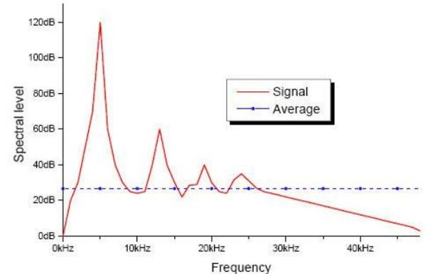
- Predicción: El codificador intenta encontrar una descripción matemática de la señal (aproximación), esta
descripción
es usualmente mucho más pequeña que la señal original. FLAC permite que la clase de predictor cambie de
un bloque a otro, o incluso dentro de los canales de un bloque.
Métodos para modelar la señal de entrada
- Modelo predictivo: Se basa en utilizar un sistema de predicción lineal que genera, para cada trama, una
señal discreta de error, e[n]. Los parámetros del predictor representan la redundancia que es eliminada
de la señal. Es capaz de predecir el valor de una muestra x[n] a partir del valor de las muestras
precedentes: x[n − 1], x[n − 2].
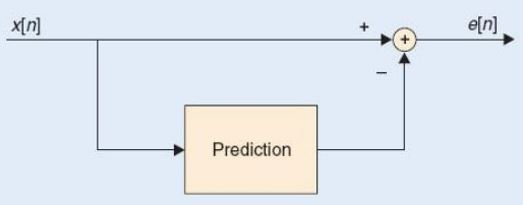
- Estructura general de predicción: Donde Q{} denota la operación de cuantificación:
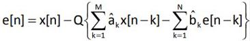
Polinomios del predictor:
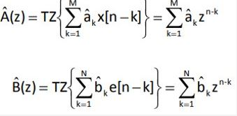
Si se elimina el cuantificador y se emplea un esquema FIR ( B ˆ (z) 0 ), los coeficientes pueden encontrarse
mediante la resolución de un simple sistema lineal de M ecuaciones con M incógnitas. Fórmula que define el error
cuadrático medio de predicción:
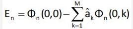
Fórmula matemática de predicción FIR
Si se elimina el cuantificador y se emplea un esquema FIR ( B ˆ (z) 0 ), los coeficientes pueden encontrarse
mediante la resolución de un simple sistema lineal de M ecuaciones con M incógnitas. Fórmula que define el error
cuadrático medio de predicción:
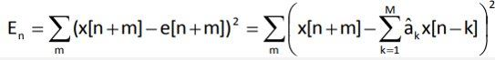
Codificación de Entropía
Se trata la redundancia estadística, que es la que se produce por no usar un código fuente óptimo. Para buscar
ese código fuente óptimo, se toman como referencia los valores estadísticos de la señal para eliminar este tipo
de redundancia. El objetivo de la codificación es obtener una representación eficiente de los símbolos de la
señal. Tiene como objetivo eliminar la redundancia de la señal obtenida, e[n].
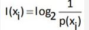
La entropía determina el límite máximo al que se puede comprimir un mensaje usando un enfoque símbolo a símbolo
sin ninguna pérdida de información, el límite de compresión (en bits) es igual a la entropía multiplicada por el
largo del mensaje. Su cálculo se realiza a partir de su distribución de probabilidad p(x) mediante la siguiente
fórmula:
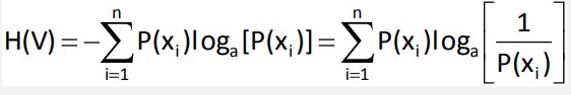
Su principio básico es que se asignan códigos más cortos a símbolos con mayor probabilidad de aparición. Por
tanto, la longitud del código será:
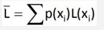
Dónde L(xi) representa la longitud (bits) del símbolo codificado.
Efectividad de compresión
FLAC es el acrónimo en inglés de un formato o mejor dicho codec de compresión sin pérdida cuyas siglas
corresponden a las de “Free Lossless Audio Codec”. El audio digital comprimido por este algoritmo viene a
reducirse típicamente entre un 50 y un 60% de su tamaño original, descomprimiéndose posteriormente en una
copia idéntica lo que se consigue mediante la predicción lineal para convertir las muestras de datos en
series de pequeños números no correlativos (conocidos como "residuos") que se almacenan eficientemente
usando la codificación Golomb-Rice.
Además de esto, para aprovechar los silencios donde los valores numéricos presentan mucha repetición, el
algoritmo del FLAC usa un método de codificación por longitud de pista o "RLE“ (Run-Length Encoding") para
muestras idénticas.
Pérdida de Datos
A diferencia de otros formatos para la compresión del tamaño de los ficheros de música como el MP3, WMA, AAC
u Ogg Vorbis, que sí que tienen aunque sea en mayor o menor medida pérdidas de calidad al basarse todos
ellos en la reducción del tamaño de los ficheros o tracks por eliminación de ciertas frecuencia.
El formato o codec FLAC es ideal para la música por cuanto con él se logra reducir el tamaño de los archivos
originales en PCM-WAV a prácticamente la mitad sin que se pierda absolutamente nada de calidad como si se
tratara de un ZIP o un RAR especialmente ideado para la música, lo que ha hecho que el FLAC se convierta en
uno de los formatos preferidos para la venta de música por Internet.
Curiosidades
- El codec FLAC no soporta muestras en coma flotante, sino en coma fija.
- Admite cualquier tasa de muestreo desde 1 hasta 655.350 Hz en incrementos de 1 Hz.
- Admite cualquier número de canales de audio desde uno a ocho los cuales pueden ser agrupados.
- Existe un archivo conocido como ALAC(Apple Lossless), es similar en cuanto a funcionamiento al FLAC.
Usa compresión, aunque ésta no es tan eficiente como la del FLAC por lo que los archivos son un poco más
grande